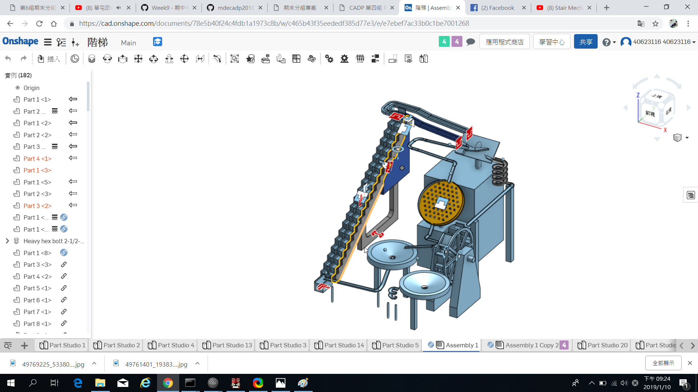

Q1：我們在操作V-rep上遇到了一些問題，例如說：關節的位置設定跟尺寸及長度不知道怎麼樣去設定及更改。
A：根據PDF檔的資料去做更改以及測試。
Q2：階梯軌道無法順利作動

A：更改軌道樣式，修改成螺旋線型。
Q3：Onshap零件不是畫 一體放進模擬程式開碰撞會很多
A：將零件重新編輯成一體。
Q4:在模擬的時候常會出現卡球或者是球會越跑越慢得情形。
A:因為在繪製零件時，本身得斜度就不太足夠，需要加大傾斜角。
Q5:在幫水車進行模擬的時候，常常會出現亂轉或亂跳的情形。
A:要先把水車旁邊的其中一個支柱與Base合併，再將已經插好旋轉軸的水車轉動的部分擺在另一邊的支柱底下，開啟水車本體的碰撞將上面的Local respondable mask那一行的勾勾全部弄掉，這樣一來就可以讓水車轉動了。
Q6:要怎麼讓軸順、逆轉。
A:去編輯Joint的地方，點擊最下面的Show dynamic properties dialog的按鈕，進去之後打勾Motor enabled編輯底下的Target velocity的正負就可以改變旋轉的方向了。
Q7:為什麼明明不是同一個零件但是mesh進V-rep的時候卻會變成一體(不是Divide的問題)
A:因為零件與零件之間的空格太小了，導致電腦再轉檔的時候會出現自動把兩個很相近的零件視為同一個零件且合併在一起，解決方法就是要把零件與零件間取好適當的距離(經過測試0.1inch即可避免發生此問題)，尤其是在軸與本體上最常發生這類的問題。